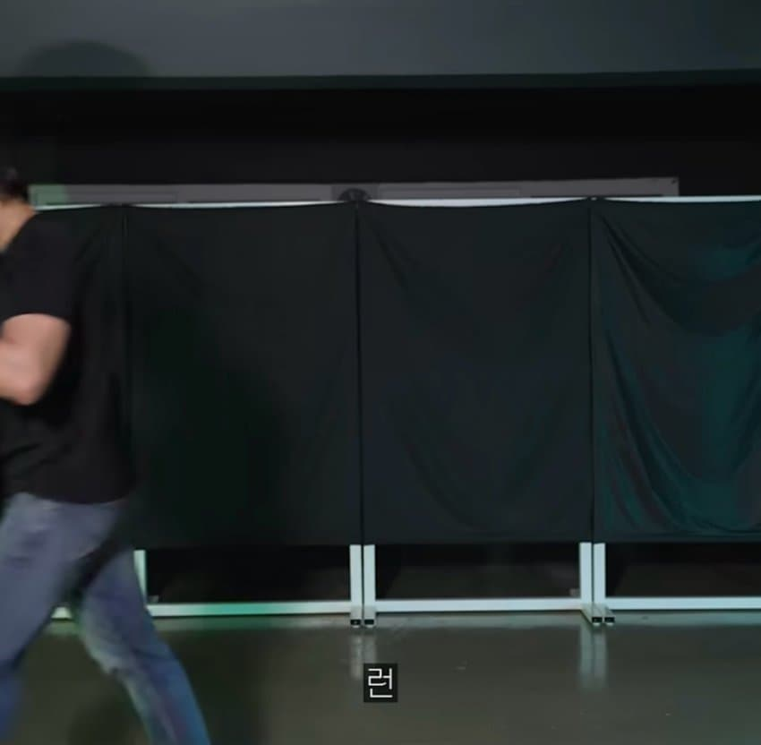

이근이 알려주는 흉기소지자 대처법
댓글
1순위 : 도망
2순위 : 살려달라고 빌기
3순위 : 정 어쩔수 없다면 목숨을 걸고 용기있게 맞서 싸우기
영화같은거 보고 거리유지하면서 막대기 휘두르고 그런거 하지 말고
공격하는 사람도 영화처럼 공격하는게 아님
전속력으로 달려들어서 체중으로 푹찌르기만 해도 mma파이터들 포함 피할수 있는 사람 거의 없음
어쩔수없이 싸우는 상황까지오면 수건이나 겉옷같이 넓은 면적의 천을 가지고 있는게 좋을듯
뭐라도 들게 있다면 심리적으로 조금이라도 도움일 될듯
막고
런근
퍼킹 턴이 존나 웃기네 시발 ㅋㅋㅋㅋ
막고!
이건 영상으로 들으면서 봐야 찐이다 ㅋㅋㅋㅋㅋㅋㅋㅋ
바로 옷을 다 벗기
죽일 생각으로 싸워야 살 수 있다고 내가